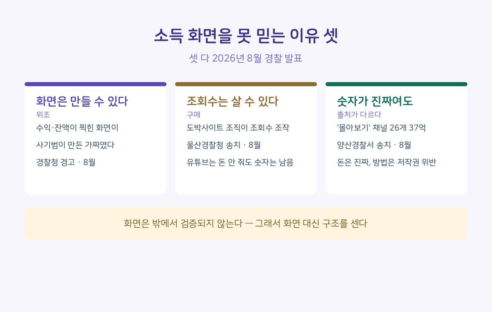
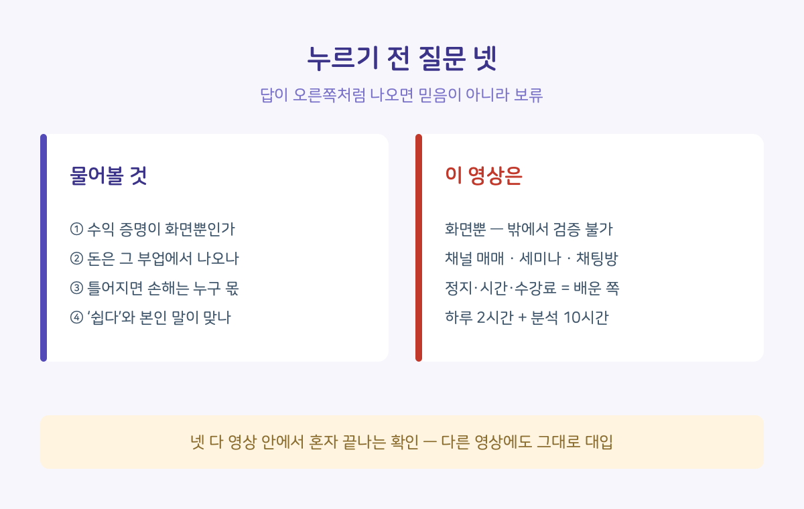

"아직 사람들이 이 방법을 잘 몰라요." 이렇게 시작하는 부업 영상이 알고리즘을 타고 자꾸 넘어오길래, 그중 25분짜리 한 편을 골라 처음부터 끝까지 문장 단위로 읽어봤습니다. 다 읽고 나니 이상한 점이 하나 남았습니다.
영상 속 인물은 그 방법의 신규 신청이 지금은 막혀 있다고 스스로 말합니다. 그런데 채팅방 입장은 지금 하라고 합니다. 시작할 수 없는 방법을 두고 입장만 먼저 받는 겁니다. 팔리고 있는 건 방법이 아니라 대기열이었습니다.
소득 화면부터 짚겠습니다. 저는 진짜인지 확인할 수 없었습니다. 겸손이 아니라 이유가 셋입니다.
첫째, 화면은 만들 수 있습니다. 수익과 잔액이 찍힌 화면 자체가 가짜였던 사기를 경찰청이 지난달 경고했습니다. 둘째, 조회수는 살 수 있습니다. 지난달 울산경찰청이 송치한 도박사이트 조직이 영상을 추천 상단에 올리려고 그렇게 했고, 유튜브는 그런 조회에 돈을 안 주지만 화면 숫자에는 남습니다. 셋째, 숫자가 진짜여도 돈의 출처가 다를 수 있습니다. 지난달 양산경찰서가 송치한 '몰아보기' 채널 26개는 37억 원을 실제로 벌었고, 방법이 저작권 위반이었습니다.

그래서 화면은 제쳐두고, 밖에서도 셀 수 있는 것을 셌습니다.
■ 25분의 설계도
편집이 거의 공식처럼 움직입니다.
먼저 수익 인증입니다. "의심하실까 봐"라며 소득 화면부터 보여줍니다. 다음은 희소성 — 아는 사람이 전국에 스무 명도 안 된다는 꿀통 서사입니다. 셋째는 무료 선물. 프롬프트·생성기·책까지 공짜로 준다고 합니다. 넷째, 그 선물을 받으려면 링크를 눌러 단체 채팅방에 들어가야 합니다. 25분 동안 같은 안내가 다섯 번 나옵니다. 끝머리에는 자기 스승을 세미나에 모신다는 예고가 나옵니다.
진짜 상품은 영상 안에 없고, 방 안쪽에 있습니다.
다른 부업·수익 영상 네 편(한국 셋, 해외 하나)도 같은 방식으로 훑었습니다. 순서는 달라도 세 가지는 같았습니다. 소득 화면이 먼저, 무료 선물이 있고, 진짜 상품은 영상 밖에. 이 글의 숫자는 그중 한 편 것입니다.
이 영상이 거짓이라고 말하려는 게 아닙니다. 화면과 구조를 나누자는 겁니다.
■ 어디를 보면 되나
이런 영상 앞에서 쓸 수 있는 질문은 넷입니다.
하나, 수익 증명이 화면뿐인가. 위에서 본 대로 화면이 많을수록 믿음이 아니라 보류가 맞습니다.
둘, 이 사람의 수익은 그 부업에서 나오나, 가르치는 일에서 나오나. 이번 영상 속 인물이 본인 입으로 말하는 가장 큰 돈의 사건은 수억을 들여 채널을 사들였다가 전부 삭제돼 빚을 졌다는 실패담, 즉 채널 매매였습니다. 번 길과 파는 길이 다르면 내가 배우는 건 그 사람이 돈 번 방법이 아닙니다.
셋, 틀어졌을 때 손해는 누구 몫인가. 계정 정지·시간·수강료 전부 배운 쪽에 남습니다.
넷, '쉽다'는 말과 본인 진술이 맞나. 하루 실작업 두 시간이라면서 트렌드 분석에 열 시간 이상을 쓴다고 합니다. 열두 시간짜리 일을 부업이라 부르는 겁니다.

■ 오늘 할 수 있는 것
셋 다 영상 안에서 혼자 끝나는 확인입니다.
1. 돈의 출처를 찾아보세요. 답은 보통 영상 설명란과 마지막 5분에 있습니다. 링크가 강의·세미나·채팅방으로 이어지면, 그게 이 사람의 수익 모델입니다.
2. 시점을 맞춰보세요. "지금은 안 된다"는 말과 "지금 들어오라"는 말이 한 영상에 같이 있으면, 파는 건 대기열입니다.
3. 공짜의 값을 계산해보세요. 무료 선물의 값은 보통 내 연락처, 그리고 다음 결제 안내를 받을 자리입니다.
저는 다른 부업 영상의 채팅방에도 들어가 봤습니다. 무료 자료는 정말 줍니다. 다만 가르치는 소재 조달법은 해외 플랫폼에서 남의 영상을 받아 편집해 다시 올리는 방식이었고, 그 강의는 혜택 목록에 '채널 삭제 항소 양식'까지 넣어 두었습니다. 공짜로 배운 대로 하면 저작권 침해가 되고, 걸리는 계정은 내 것입니다.
영상 끝머리에서 진행자가 시청자를 이렇게 부릅니다. "한 달에 50만 원, 100만 원만 더 벌어도 인생 달라지겠다 생각하시는 분들." 구직 기간에는 소득이 비어 있어서, 간절할수록 그 말이 깊게 박힙니다. 겨냥하는 게 정확히 지금 이 게시판을 읽는 분들이라서, 이 글을 썼습니다.
여러분 알고리즘에도 이런 영상이 떴다면, '무료 선물'로 뭘 주던가요? 한 줄로 남겨주세요. 유형이 모이면 정리해 다시 올리겠습니다. 다음에는 그 채팅방에서 받은 무료 자료를 한 장씩 열어, 공짜가 정확히 무엇을 가르치는지 정리해볼 생각입니다.
근거: 부업 소개 영상 1편(25분) 전편 전수 확인 + 영상 4편·채팅방 1곳(전자책 3권·강의 3시간) 추가 확인(2026.8~9). 사건 3건은 2026년 8월 경찰 발표 보도(경찰청·울산·양산). 특정을 피하기 위해 영상·출연자 정보는 밝히지 않습니다 / 2026.9.4. 확인